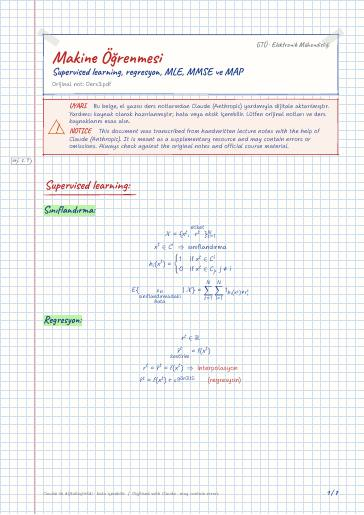
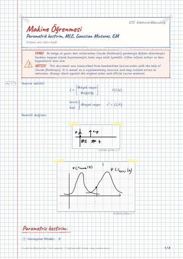
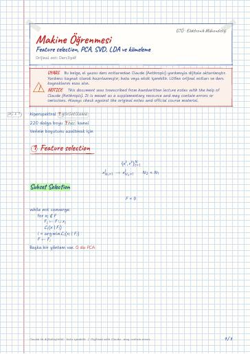
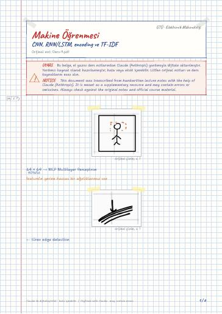
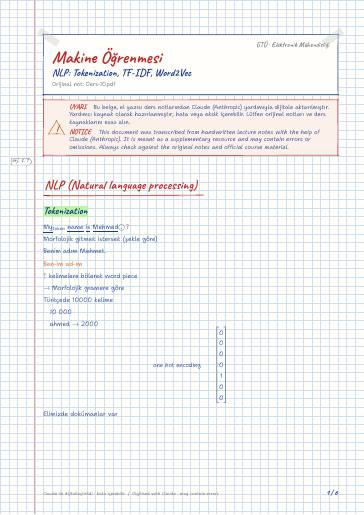
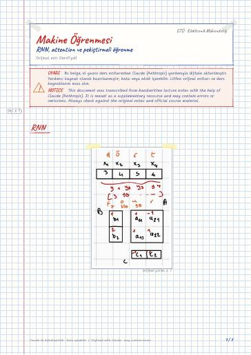

Lecture 2 – Metrics, distance measures, classification criteria
Independent component analysis · Metrikler · Mesafe ölçümü ve metrikler · Metrik · KL-Divergence · Jenson-Shannon div
Makine Öğrenmesinin Temelleri — ders notları, ödevler, projeler · Gebze Teknik Üniversitesi (GTÜ) Elektronik Mühendisliği
Supervised and unsupervised learning, regression and classification, Bayesian decision theory, dimensionality reduction, clustering and anomaly detection, and an introduction to neural networks.
Gözetimli ve gözetimsiz öğrenme, regresyon ve sınıflandırma, Bayesçi karar teorisi, boyut azaltma, kümeleme ve anomali tespiti, yapay sinir ağlarına giriş.
On this page: General Lecture notes Digital notes (LaTeX) Exam preparation Homework Projects GitHub repositories Textbooks
Most files are in Turkish; file and folder names are shown as they appear in the repository.
Searchable digital versions of the handwritten notes, typeset in LaTeX (the notes are written in Turkish). Template and build: latex-sablon.
Independent component analysis · Metrikler · Mesafe ölçümü ve metrikler · Metrik · KL-Divergence · Jenson-Shannon div

Supervised learning · Sınıflandırma · Regresyon · 3 adımımız var · Hastalık tespitinde · İlişki kuralları

Parametric kestirim · MLE · Yeterli istatistik (Sufficient Statistics) · Bernoulli Distrubution · Gauss Dağılımı · Gaussian Mixtures

Kitapta non parametrik kısımlara gireceğiz

Karar ağaçları , Regresyon ağaçları · Decision tree · Impurity measures · Entropy · Gini Sabiti · Regresyon ağaçları

1 Feature selection · Subset Selection · Principle Component analizi · Feature Embedding · Eigen faces · Singular value composition

ROC curve · sigmoid · Back Propagation · Derin öğrenmede katmanlar artar

Transfer Learning · Explainable AI · Encoding

NLP (Natural language processing) · Tokenization · Word2Vec · CBOW · Skip gram / n-gram · Global vectors for word Representation (Glove)


Karar ağaçları (Decision tree) · Saflık ölçütleri (Impurity measures) · Regresyon ağaçları · Avantajları · Dezavantajları · Ensemble Learning
Sources used in the course (the books themselves are not published because of copyright):
Image Processing · RF System Design for Communications
Open the folder on GitHub← Semester 7
Course materials belong to their instructors and GTU and are shared for educational purposes only.